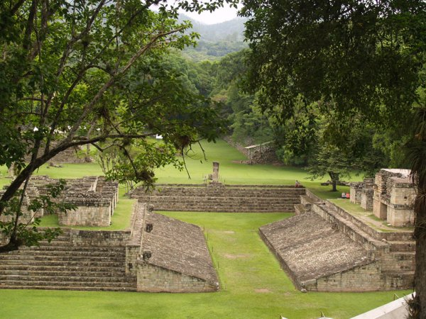

Sitios Arqueologicos de El SalvadorTurismo
Espacio Educativo
Comenta Que Te Parecio
La Informacion Mas Detallada
La imformacion mas dellada en la materia que es tan bella de la arquitectura, podras encontrar la mayor informacion.
Joya de Cerén.
Sitio arqueológico Casa Blanca.
Antigua Escuela de Artes Santa Ana.
Museo Nacional de Antropología.
San Andrés.
Finca San Antonio.
GALERIA DE IMAGENES
JOYA DE CEREN
RUINAS SAN ANDRES
RUINAS TAZUMAL
 JOYA DE CEREN
JOYA DE CEREN
